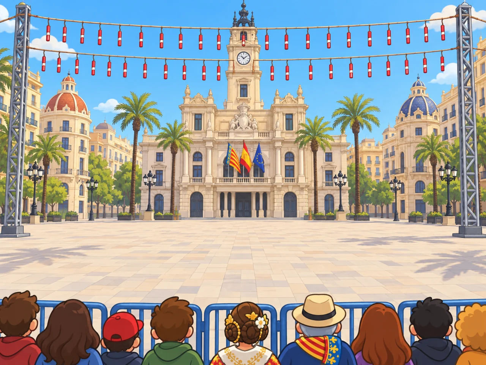
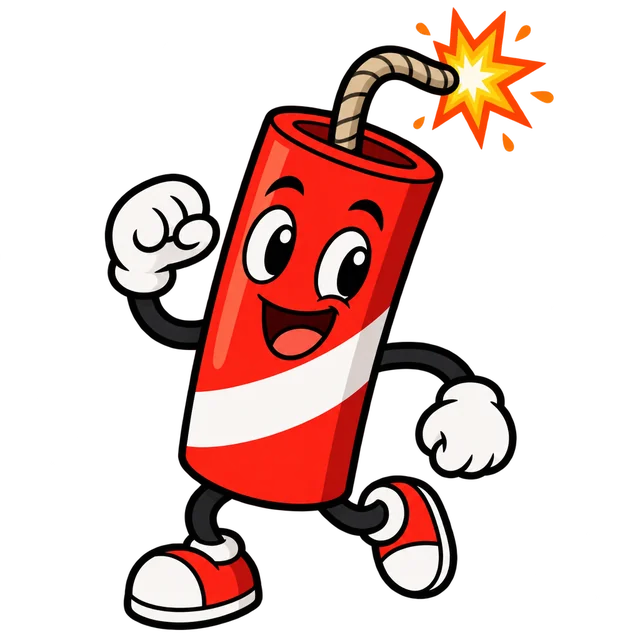
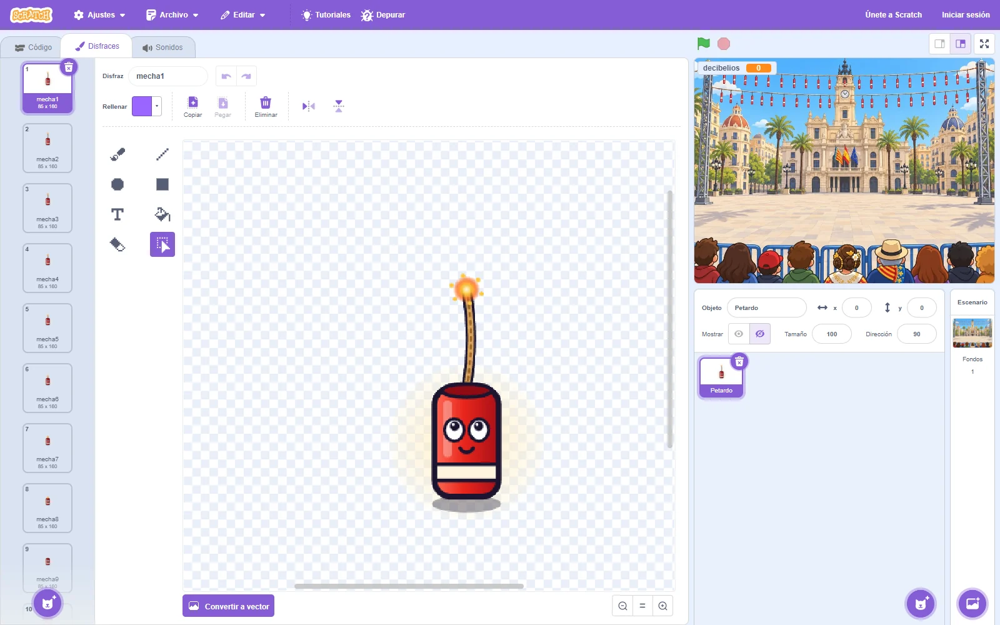
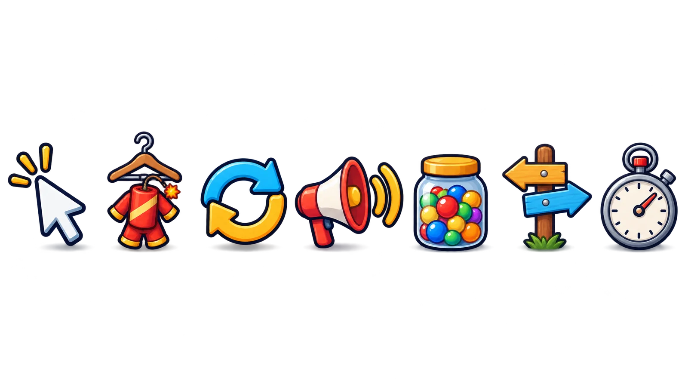

Módulo 2
Imágenes y música con IA
Cómo se hicieron el fondo, los petardos y el pasodoble: qué pidió el docente, qué prompt escribió la IA y qué salió. Y cómo hacerlo en tu clase.
←→ para moverte · B buscar · P pantalla completa
Foto: Sumolari · CC BY-SA 4.0 · Wikimedia Commons
Módulo 2
Qué necesita el juego y cómo se hizo
Un prompt es el texto con el que le pides algo a una IA. No todo se hizo con prompts, y las decisiones las tomó siempre el docente.

Un prompt que escribió Claude y una imagen de gpt-image.


Una IA de imágenes no sabe dibujarlo 9 veces igual.


Con el mismo programa que el petardo.

Música nueva, sin derechos de nadie.
El fondo
Cómo se llegó al prompt del fondo
1. Lo que escribió el docente
«si, hazlo»
Respondía a una propuesta del agente: hacer un prototipo jugable. Para jugarlo hacía falta la plaza de fondo, con el centro vacío. Eso lo pensó el agente, no el docente.
2. El prompt que escribió el agente de IA
257 palabras en inglés. Completo en la diapositiva siguiente.
3. La imagen
La hizo gpt-image (OpenAI), en Replicate. El centro queda vacío para los petardos.
El fondo
El prompt completo del fondo
Es el texto que recibió el generador de imágenes. Describe el fondo por zonas, de arriba abajo.
Background art for a casual 2D kids' game (only the background layer, no characters in the play area, no UI, no text). 4:3. SCENE: a stylized cartoon version of Valencia's town hall square at midday in March. Bright clear blue sky. Centre background: an elegant cream-coloured stone building with a central clock tower and a balcony with three flags. Smaller domed buildings on both sides and a few palm trees. Flat colours, low detail, slightly soft and light so foreground sprites will stand out on top of it. UPPER-MIDDLE BAND: the classic mascleta setup: two long horizontal ropes stretched across the whole width between tall grey metal truss poles at the far left and far right, with many small red-and-white paper firecrackers hanging from the ropes in neat rows, like clothes on a washing line. No explosions, no smoke yet. MIDDLE AND LOWER-MIDDLE (from about 45% to 82% of the height): the open, empty, light-coloured paved plaza. Keep this area clean and uncluttered: it is the play area. BOTTOM 16%: a blue metal crowd barrier across the whole width with a row of simple cartoon spectators seen from behind (backs of heads and shoulders only), colourful clothes, one with a Valencian flag scarf, one with a straw hat, one with traditional fallera hair buns with flowers. STYLE: bright, playful, polished casual indie-game art. Bold dark outlines, flat cel shading, saturated but slightly soft colours: sky blue, cream, warm stone, a little red. Same look as a modern cartoon mobile game. No logos, no watermark, no text anywhere.
Qué hace cada parte
- Qué es: solo el fondo, 4:3, sin texto.
- Escena: la plaza, de día.
- Arriba: las cuerdas de masclets.
- En medio: vacío. Ahí se juega.
- Abajo: el público de espaldas.
- Estilo: igual en todos los prompts.
Se sabe porque Claude Code guarda el registro de cada sesión.
Para tu clase
Hazlo así: pide el prompt a la IA
- En ChatGPT, cuenta el juego en pocas frases: la tradición, qué hace quien juega y cómo se ve.
- Pide que te escriba un prompt detallado para la imagen que necesitas.
- Léelo y corrígelo: quita lo que no quieras y añade lo que falte. Ahí es donde decides tú.
- Pide que genere la imagen. Si no sale bien, cambia el prompt; no empieces de cero.
Estamos haciendo con alumnos de 11 años un videojuego de Scratch sobre la mascletà de las Fallas. Salen petardos por la plaza del Ayuntamiento y hay que hacer clic cuando se acaba la mecha. Escríbeme un prompt detallado para un generador de imágenes que dibuje el fondo del juego: la plaza con las cuerdas de masclets arriba, el público de espaldas abajo y el centro vacío, que es donde salen los petardos. Dibujo animado, contorno grueso, colores planos, formato 4:3 y sin texto. Después, genera la imagen.
Para tu clase
Cómo pedir un buen fondo
- Di que es un fondo de videojuego y su formato: 4:3, como el escenario de Scratch.
- Describe la escena por zonas: el cielo, lo de detrás, la zona de juego y lo de delante.
- Pide la zona de juego vacía y colores algo suaves: así destacan los objetos.
- Pide sin texto: las IA escriben mal.
- Copia siempre el mismo párrafo de estilo en todos los prompts.
Fondo para un videojuego 2D, formato 4:3. La plaza de mi pueblo en fiestas, con la iglesia al fondo y banderitas de colores colgadas arriba. La parte central y la de abajo, vacías: es donde se juega. Estilo dibujo animado, contorno oscuro grueso, colores planos y alegres pero suaves. Sin personas en primer plano. Sin texto.
Los petardos
Los petardos: el problema de los fotogramas
Para animar la mecha hacen falta 9 dibujos del mismo petardo. Una IA de imágenes no los dibuja 9 veces iguales: cambia la cara, el tamaño o el color.


Lo que hicimos: dibujarlos con código
Claude escribió un programa que pinta el petardo. Cambiando un solo número (lo que queda de mecha) salen los 9 dibujos idénticos. Igual la explosión y el petardo fallado.
Lo que puedes hacer tú
Generar un personaje con IA y hacer las variaciones en el editor de disfraces de Scratch: duplicar y borrar un trozo de mecha en cada copia.
Los petardos
Un personaje con un prompt sencillo

Un personaje para un videojuego: un petardo rojo con una banda blanca, cara simpática y la mecha encendida. Estilo dibujo animado, con contorno oscuro grueso y colores planos. Un solo personaje, centrado. Fondo transparente. Sin texto.
- Sale muy resultón… y con brazos y piernas que nadie pidió. Hay que repetir o retocar.
- Este también lo escribió Claude, pero corto y en castellano a propósito: es como lo pediría una persona.
- Fondo transparente da un PNG que Scratch importa sin recuadro blanco. Si la herramienta no lo hace, quita el fondo con Canva o en el editor de Scratch (goma).
Los petardos
De una imagen a 9 disfraces en Scratch
- Pestaña Disfraces › botón del gato › Subir disfraz. Elige el PNG.
- Clic derecho sobre el disfraz › duplicar. Repite hasta tener 9.
- En cada copia, borra un trozo más de mecha con la goma.
- Ponles nombre: mecha1 … mecha9.

1 2 3 4Para tu clase
Más prompts para tu clase
Adáptalos a vuestro juego: cambia la tradición, el objeto o los colores.
Una explosión de cómic, naranja y amarilla, con la palabra PUM en letras gruesas. Estilo dibujo animado con contorno oscuro grueso. Fondo transparente.
Un ninot de falla pequeño y simpático, de cuerpo entero, mirando de frente. Estilo dibujo animado con contorno oscuro grueso y colores planos. Un solo personaje, centrado. Fondo transparente. Sin texto.
Convierte este dibujo de un alumno en un personaje de videojuego. Mantén la forma y los colores del dibujo. Estilo dibujo animado con contorno oscuro grueso. Fondo transparente. Sin texto.
El tercero adjunta la foto de un dibujo en papel. Así el diseño es del alumnado y la IA solo lo pasa a limpio. Nunca adjuntes fotos de personas.
Música y sonido
La música: un pasodoble original
El pasodoble lo compuso Claude como datos: cada nota de la dolçaina con su compás, su golpe y su altura, más los acordes de la banda.
Después, un programa lo sintetiza: imita la dolçaina, el bajo, el bombo y el tabal, y lo graba en MP3.

120 BPM
Un golpe cada 0,5 segundos. Saberlo es lo que permite cuadrar los petardos.
Dolçaina y tabal
Los instrumentos de la música de calle valenciana.

«Pum» y «fsss»
También sintetizados: ruido filtrado y un golpe grave.
Música y sonido
Música para vuestro juego
La banda del pueblo
Grabad a la banda, a un dolçainer o al profe de Música. Es lo más valenciano y lo más original.
Extensión Música de Scratch
Bloques para tocar notas y tambores con un tempo fijo. El alumnado programa la melodía.
Biblioteca de Scratch
Pestaña Sonidos › elige un sonido › categoría Bucles. Listos para usar en Scratch.
Música con licencia libre
Licencias CC0 o CC BY. Con CC BY hay que citar a la autora o autor en itch.io.
Música con IA
Hay generadores de canciones. Revisa sus condiciones de uso y la edad mínima. Los usa el docente.
Lo que no
Canciones comerciales (radio, plataformas): tienen derechos y el juego se publica.
Sea cual sea la música, necesitas sus tiempos: o sabes sus BPM o los grabas con el modo pirotécnico (módulo 4).
Extra
Los iconos de esta formación

El docente escribió: «usa replicate para generar la autoformacion, para que sea facil de leer, de usar», y aclaró: imágenes, diagramas, iconos. Claude decidió qué iconos hacían falta y escribió un prompt por hoja: varios en fila, con fondo transparente. Un pequeño programa los separa en archivos sueltos.
A sheet of EXACTLY 7 separate icons in a single horizontal row, each centered in its own seventh of the width, with wide empty transparent gaps between them. Objects only, no people, no words, no letters, no labels, no numbers, no logos, no background, no floor, no frame. Only a very subtle soft contact shadow under each object. From left to right: 1) a white computer mouse pointer arrow clicking, with three small click lines; 2) a wooden coat hanger holding a small red firecracker costume; 3) two thick circular arrows chasing each other to form a loop; 4) a loudspeaker with sound waves; 5) a glass jar with a lid, full of colourful round counters; 6) a wooden road signpost with two arrows, one pointing left and one pointing right; 7) a classic silver stopwatch with a red button. STYLE: bright, playful, polished casual indie-game art, like a modern cartoon mobile game. Bold dark navy outlines, flat cel shading with one soft highlight, saturated colours: firecracker red, fire orange, golden yellow, sky blue, cream, a little mint green and purple. Friendly, simple, readable at small size.
Normas
IA en primaria: normas básicas
La usa el docente
La mayoría de herramientas piden 13 o 14 años. En España, el consentimiento para tratar datos personales empieza a los 14.

El diseño es del alumnado
Ellos dibujan y describen. El docente lo convierte en prompt y lo enseña en la pizarra.

Nada personal
Ni fotos de alumnos ni nombres en los prompts.
Sin marcas ni personajes ajenos
Nada de personajes de películas o videojuegos con derechos.
Dilo
En itch.io y en el vídeo: qué se hizo con IA y qué hizo el equipo.

Revisa siempre
La IA se equivoca: textos mal escritos, manos raras, datos falsos.
Fin del módulo 2
Ya tenemos idea, imágenes y música
Ahora, a programar. El módulo 3 empieza desde cero: la pantalla de Scratch y el primer bloque.